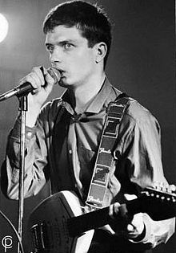

|
Роберт Смит (The Cure), 1985 |
Термин «пост–панк» был впервые использован журналистами в конце 70–х годов, чтобы описать группы временно выходящие за рамки звукового шаблона панка в разрозненных направлениях.Несмотря на отличия между регионами и музыкантами, пост–панк музыка была охарактеризована «концептуальным нападением» на рок–устои и уходом от эстетики, воспринимаемой как традиционализм, гегемония или рокисм (заблуждения в критике популярной музыки, когда некоторые группы или виды популярной музыки восприниматься как более оригинальные, чем остальные, часто изобретение этого термина приписывают Питу Уайли в 1981 году) в пользу экспериментов с технологиями производства (в роли музыкального продюсера) и не рок музыкальными стилями, такими как даб, электронная музыка, диско, нойз, джаз, краут–рок, этническая музыка или авангард. В то время как постпанк музыканты часто избегают или намеренно делают неясными обычные музыкальные влияния, предыдущие музыкальные стили так и служат для движения пробным камнем, в том числе конкретные виды глэм, арт–рока и «тёмного подтекста музыки 60–х». По словам критика Саймона Рейнольдса, исполнители в очередной раз приблизили студию как инструмент, используя новые методы записи и исследуя неизвестные звуковые области.
|
 Йен Кертис (Joy Division), 1978 |
Николас Лезард описал постпанк как «слияние искусства и музыки». Эра постпанка черпала идеи из литературы, арт–кино, философии, политики, а также критической теории в музыкальном и поп–культурном контекстах. Исполнители стремились отказаться от общего различия между элитарной и массовой культурой и нашли отражение в творчестве таких музыкантов, как Капитан Бифхарт и Дэвида Боуи. Среди основных влияний на разнообразие пост–панк исполнителей были авторы книг, такие как Вильям С.Берроуз и Джеймс Баллард, авангардные политические течения, такие как Ситуационизм и Дадаизм, и интеллектуальные течения, такие как постмодернизм. Многие исполнители рассматривали свою работу в явно политическом плане. Дополнительно в некоторых местах создания пост–панк музыки были тесно связана с эффективным развитием субкультуры, которая играла важную роль в развитии искусства, мультимедийных перформансов, фэнзинов и независимых лейблов, относящихся к музыке. Многие пост–панк исполнители поддерживают анти–корпоративный подход к звукозаписи, придерживаясь альтернативных средств производства и выпуска музыки.